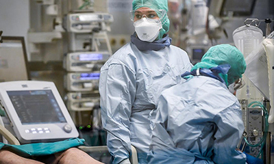

Установлен усиливающий риск смерти от коронавируса SARS-CoV-2 фактор

Специалистам удалось установить фактор высокого риска смерти пациентов с коронавирусной инфекцией COVID-19.Об этом стало известно информационно — новостному порталу KURSK.COM.
Экспертами из Каролинского института (Karolinska Institute) в Швеции были проанализированы образцы крови и мазки 147 COVID-носителей.
Было установлено, что у пациентов, инфицированных вирусом SARS-CoV-2, у которых болезнь протекает в тяжелой форме, уровень специфических иммунных клеток, называемых супрессорными клетками миелоидного происхождения, в значительной степени завышен.Присутствие данных клеток способно объяснить развитие осложнений при заражении вирусом COVID-19.Статья о научной работе шведских ученых была опубликована журналом Journal of Clinical Investigation.
Авторы исследования подчеркивают, что у супрессорных клеток M-MDSC есть способность подавлять активность Т-клеток, которые принимают участие в защите организма от различных инфекций.
Для установления роли M-MDSC в прогрессировании коронавирусной инфекции, специалистами были исследованы образцы крови и мазки 147 пациентов, у которых был подтвержден коронавируса.Часть пациентов перенесла инфицирование в легкой форме, другие скончавшихся от ковидных осложнений.Полученные результаты сравнили с группой здоровых людей и с группой, заболевшей вирусом гриппа.
Оказалось, что среди пациентов с тяжелой формой заболевания уровень M-MDSC в крови значительно выше, чем у вирусоносителей, перенесших заражение легко и у здоровых людей.
Вместе с тем, у COVID-инфицированных было обнаружено меньшее количество Т-клеток в крови.По мнению экспертов это говорит о том, что высокий уровень M-MDSC на ранних стадиях заболевания может свидетельствовать о том, что болезнь будет протекать с тяжелыми осложнениями.
Ранее мы сообщали, что в Турции создали спрей, убивающий коронавирусную инфекцию за минуту.
Posted On: 2021-06-18T21:00:00
Content Date: 2021-06-18
Download Date: 2021-06-20
Document ID: L0C04CWCC